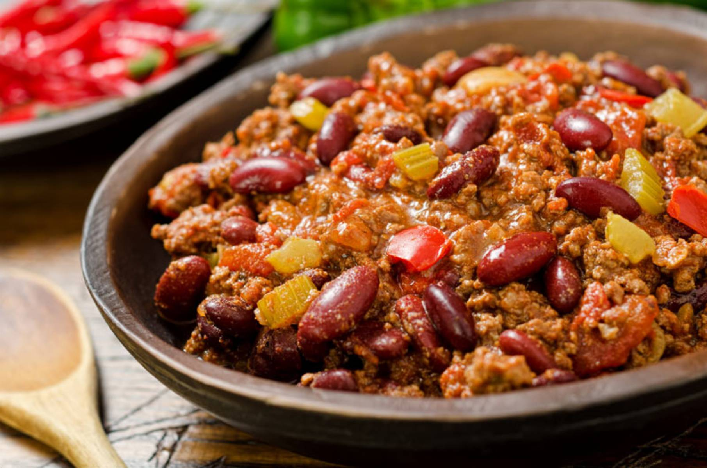

Chili con carne (z hiszp.: chili z mięsem) – tradycyjna potrawa kuchni meksykańskiej spotykana często jako fastfood w amerykańskich barach. Główne składniki to: różnego rodzaju papryka chili, cebula, czosnek, pomidory i mielone lub drobno siekane mięso (zwykle wołowina, czasem spotyka się inne, istnieją też wersje wegetariańskie). Potrawę przyprawia się za pomocą kminu rzymskiego (kuminu) i pieprzu. Często dodaje się też inne składniki w tym ziarna fasoli i kukurydzy.
Elon Musk Fajnie byłoby umrzeć na Marsie, byle nie rozbić się przy podejściu do lądowania.
Składniki
1 łyżka oliwy
1 cebula
2 ząbki czosnku
1 łyżeczka chilli w proszku
1 łyżeczka zmielonego kminu rzymskiego (kuminu)
1 łyżeczka suszonego oregano
500 g mielonej wołowiny (np. gulaszowej, antrykotu)
2 świeże pomidory lub 2/3 puszki obranych pomidorów
1 łyżeczka cukru
1 czerwona papryka
200 g czerwonej fasoli (ugotowanej)
około 100 ml bulionu np. WOŁOWEGO lub wody
100 g boczku, 5 kawałków suszonych pomidorów

Przygotowanie
Na dużej patelni, na oliwie zeszklić pokrojoną w kosteczkę cebulę, dodać starty czosnek, chilli, kmin rzymski i oregano i mieszając smażyć przez 1 minutę. Stopniowo dodawać zmieloną wołowinę i zmielony lub drobno posiekany boczek, mieszając zrumieniać z każdej strony.
Dodać pomidory (świeże należy sparzyć, obrać, pokroić na ćwiartki, usunąć pestki, miąższ pokroić w kosteczkę, pomidory z puszki należy rozdrobnić jeśli są w całości). Wymieszać i doprawić cukrem, pieprzem oraz szczyptą soli.
Przykryć i dusić przez około 20 na umiarkowanym ogniu, co jakiś czas zamieszać. Dodać pokrojoną w kosteczkę paprykę i posiekane suszone pomidory jeśli ich używamy. Gotować pod przykryciem przez około 10 minut, od czasu do czasu zamieszać. Na koniec dodać fasolę i gotować pod przykryciem przez ok. 3 minuty.
Na koniec gotować potrawę podlewając stopniowo wrzącym bulionem lub wodą, tak aby powstało trochę gęstego sosu. Można przygotować wcześniej i odgrzewać.